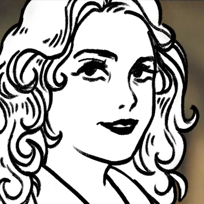

01 / Обо мне

Я начинающий специалист в медиа и коммуникациях, выпускница факультета журналистики ПГНИУ (2026 год).
Мой главный навык — превращать сложные темы в увлекательный контент. Свободно управляюсь с разными стилями и Tone of Voice: могу написать строгий лонгрид или сделать живой, динамичный пост для соцсетей.
Уверенно владею полным арсеналом инструментов: от текстов, фактчекинга и сценарной работы до дизайна и верстки (Photoshop, Figma, Clip Studio Paint, Krita) и видеомонтажа (DaVinci Resolve, CapCut). Отлично лажу с техникой и гаджетами — любые новые программы и редакторы осваиваю интуитивно и на лету.
Использую современные ИИ-инструменты и нейросети как продвинутый рабочий буст для генерации идей, структурирования информации и поиска референсов, но финальный текст и визуал всегда довожу до идеала своими руками.
Ищу команду с наставником или опытным редактором, где смогу расти, экспериментировать с форматами и делать крутой контент.
02 / Резюме
Образование
2022–2026
Пермский государственный национальный исследовательский университет (ПГНИУ)
Факультет журналистики, бакалавриат. Курсовая и дипломная работы посвящены интернет-видеоблогам.
Опыт
- 2025
SMM-специалист / Контент-мейкер
Пресс-служба ПГНИУ
- Разработала и внедрила комплексный контент-план для сообщества ВКонтакте на период приёмной кампании (3 недели: интерактивы, тесты, вовлекающие механики).
- Разработала визуальный стиль и сверстала карточки-карусели «Инструкция для абитуриента» в Adobe Photoshop.
- Адаптировала сложные научные и исторические темы под формат молодой аудитории (авторский проект «Шутки плохи» с уникальными веб-иллюстрациями).
- 2023
Корреспондент-стажёр
Телеканал «Ветта»
- Полный цикл производства ТВ-сюжетов: от генерации идей, фактчекинга и поиска экспертов до записи интервью и видеомонтажа.
- Проводила уличные опросы и репортажи в прямом эфире/с колес; один из сюжетов вышел в эфир под личным авторством.
- Успешно координировала работу оператора и съемочной группы на локациях.
Навыки
Тексты и аналитика
- Интервьюирование: поиск подхода к спикерам, сбор фактуры.
- Фактчекинг: проверка информации по нескольким источникам.
- Редактура: вычитка, исправление, работа с редполитикой.
- Сценарное мастерство: сценарии для видео и роликов, идеи для проектов.
Аудио и видео
- Видеомонтаж: Adobe Premiere Pro, DaVinci Resolve, CapCut.
- Аудиомонтаж: Audacity, Ocenaudio, Adobe Audition.
- Full-cycle: идея, сценарий, сведение звука и монтаж.
- Разные форматы: Reels, Shorts, горизонтальные видео.
Дизайн и графика
- Графический дизайн: Adobe Photoshop, Figma (карточки, баннеры, ретушь и редактирование изображений).
- Иллюстрация: Clip Studio Paint, Krita, My Paint, SAI (вектор, графика, рисунок).
- Веб-дизайн: работа в Tilda и Wix, создание концепции айдентики, адаптация графического контента.
ИИ и нейросети
- Текст и анализ: ChatGPT, Claude, DeepSeek, Grok, Gemini, Gamma (структурирование, поиск, генерация презентаций).
- Визуал: Midjourney, DALL-E 3, Kandinsky, Meshy (референсы, генерация).
- Аудио: ElevenLabs, Suno, Whisper (звук, музыка, озвучка).
- Видео: Kling AI, Pixlr, invideo AI.
- Prompt Engineering: точные промпты для различных задач.
Софт-скиллы
- Координация: управление командами до 15 человек, контроль проектов и дедлайнов.
- Организация: тайм-менеджмент, работа в таск-трекерах.
- Адаптивность: быстрое освоение нового софта и техники.
- Офисные программы: Google Workspace и MS Office.
- Коммуникабельность: владение ToV, внутренние и внешние коммуникации.
- Креативность: юмор, склонность улучшать прежние идеи и искать новые.
Языки
- Русский (родной)
- Английский (B1-B2)